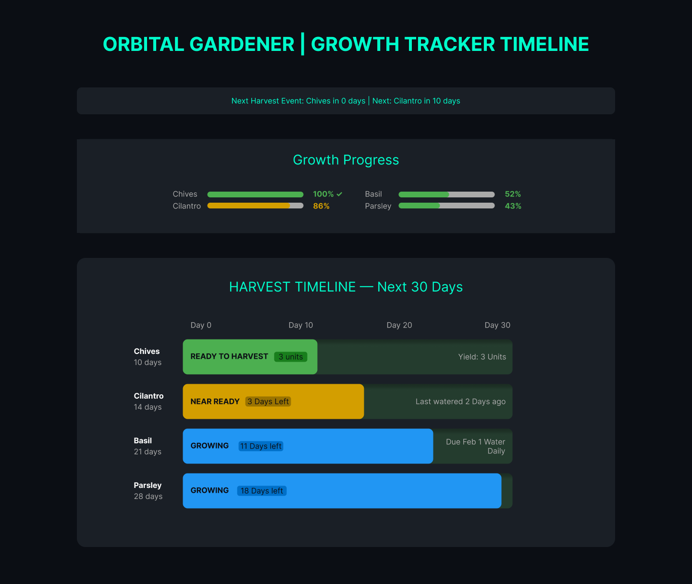
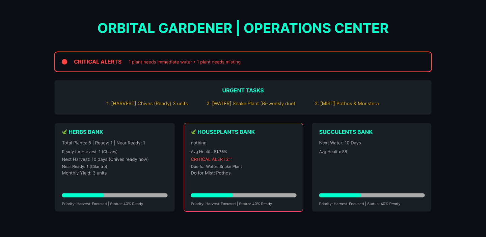
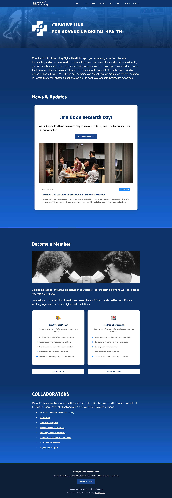

My Web Design Work
Orbital Garden
A project exploring the concept of a garden in orbit, blending technology and nature.



Appalchian Center for Assistive Technology (ACAT)
A project focused on developing assistive technology solutions for individuals with disabilities.


Creative Link
Description of the third project. This one is a portfolio website for a photographer.
